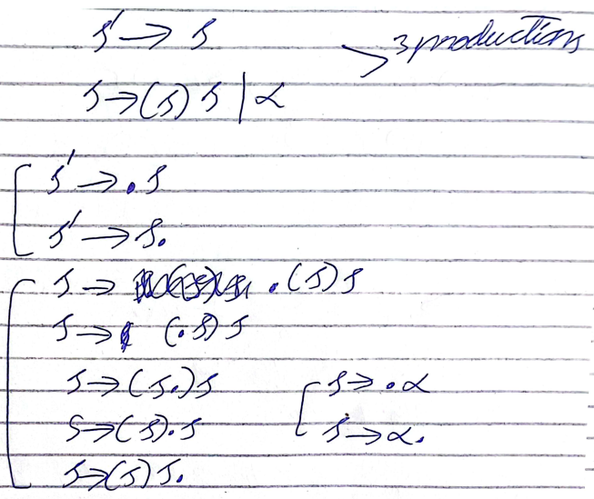
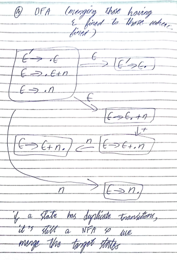
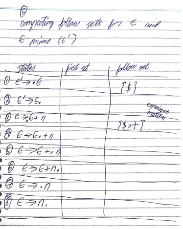
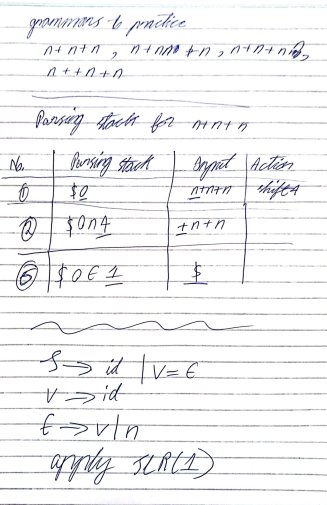
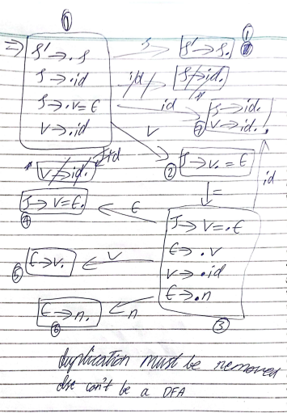
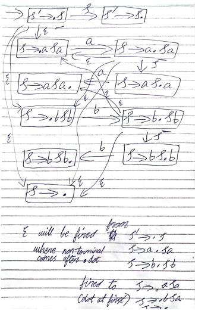
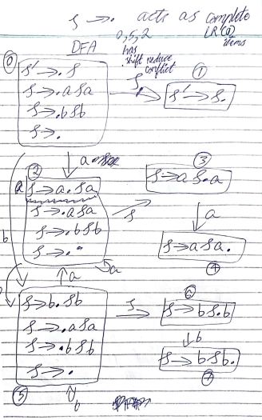

6th December 2023
First Set:-
S => (S) S | Epsilon
| FIRST | FOLLOW | |
|---|---|---|
| S | {(, epsilon} | {$, )} |
dollar is used in place of terminal.
Building the Parsing Table
column represents terminals i.e. (,), epsilon
rows represents the non terminals i.e. S
S => (S) S | Epsilon
epsilon is invisible in the parsing table.
| ( | ) | $ | |
|---|---|---|---|
| S | S => (S)S (came on the basis of first rule) | S => epsilon (came on the basis of follow set) | S => epsilon (came on the basis of follow set) |
LL1 uses lookahead symbol. Therefore, dollar symbol is used in the end.
cells are filled on the basis of first sets and follow sets (if first set has epsilon). Some cells may or maynot be filled.
( is produced by first production so wrote first production.
If we have only epsilon in first set, then we use follow sets. Otherwise, they are not used.
Epsilon is not used in the first set until all non terminals have epsilon values.
S => ABC
A => aA | b | epsilon
B => bB | epsilon
C => cC | epsilon
| FIRST SETS | FOLLOW SETS | |
|---|---|---|
| S | {a,b,c,epsilon} | {$} |
| A | {a,b,epsilon} | {$,b,c} |
| B | {b, epsilon} | {$, c} |
| C | {b, epsilon} | {$} |
| a | b | c | $ | |
|---|---|---|---|---|
| S | S => ABC | S => ABC | S => ABC | S => ABC (since S has epsilon) |
| A | A => aA | A => b , A => epsilon | A => epsilon | A => epsilon (since A has epsilon) |
| B | B => bB | B => epsilon | B => epsilon (since B has epsilon) | |
| C | C => cC | C => epsilon (since C has epsilon) |
| No. | Parsing Stack | Input | Action |
|---|---|---|---|
| 1 | $S | ()$ | replace S => (S)S |
| 2 | $S)S( | ()$ | match |
| 3 | $S)S | )$ | replace S => epsilon |
| 4 | $S) | )$ | match |
| 5 | $S | $ | replace S => epsilon |
| 6 | $ | $ | input accepted |
Solve the following:- (()) ()
1) first set
2) follow set
3) parsing table
4) LL1-Actions
Solve the following:-
E => EAT | T
A => + | -
T => TMF | F
M => *
F => (E) | n
remove left recursion...
Dec 13th, 2023
unlike top-down parsing which involve left most derivation, bottom-up parsing involve right most parsing.
It involve the following steps:-
S` => S, where S` means S prime
S => (S)S | alpha
it has no problem with left recursion and has the following steps.
For Example: -
S` => S
S => (S)S | alpha
step 2
since, the question has 3 productions, we will have to append the dots (listing LR(0) items) to all of them separately. dot is places before and after every word until it reaches the end of the statement or the sentence. LR(0) items are of three main types.
1) Beginning LR(0) item: dot at first (.a)
2) Complete LR(0) item: dot at end (a.)
3) intermediate LR(0) item: dot in between the sentence (a.a)

step 3
at first, we create the individual transitions that are taking place and then we fire epsilon transitions on the basis of 2 conditions. epsilon transition is fired only from the non terminal and secondly, the target state non terminal must also be equal to the source state non terminal.
to remove any confusion, making it again
step 4
once, the transitions are completed and epsilon transitions are also fired, we will convert NFA to DFA. In the convertion procedure, we have to combine the entries on the basis of a condition. The target state of epsilon is merged to the source state of epsilon. this is to remove the epsilon which isn't present in DFAs.

step 5
Build LR(0) parsing table
if we have beginning and intermediates LR(0) items, we consider them in shift state. otherwise, for complete LR(0) items, we consider them in reduced states.
important practice question:- E => E + n | n
Dec 15th, 2023
here, I'll be using a instead of alpha, mistake which I did in the beginning and continued it until here. But, it's over now.
| States | Actions | Rules | Inputs (non terminals) | Go To (terminals) | ||
|---|---|---|---|---|---|---|
| ( | alpha / a | ) | ||||
| 0 | Shift | 2 | 6 | 1 | ||
| 1 | Reduced | S`=>S | ||||
| 2 | Shift | 2 | 6 | 3 | ||
| 3 | Shift | 4 | ||||
| 4 | Shift | 2 | 6 | 5 | ||
| 5 | Reduced | S => (S)S | ||||
| 6 | Reduced | S=>a | ||||
Processing of the String happens in the reverse order and therefore called reverse engineering.
here, we will give some input of our own choice and wil check if parsing is done smoothly or there is a mistake. $ in the beginning of parsing stack represents the stack is empty. And, the dollar in the end of input represents that it's the end.
Shift is used to put the element present at the left most position of the input to the top of the stack i.e. the right most position of the parsing stack.
Reduced uses some condition or rules to make an attempt to reduce the above parsing stack to a smaller value. This is done by remove the values and replacing them to the non terminals.
once, a step is performed, we check the right most 2 values in the parsing stack and check rows (first element) and column (second element) in teh parsing table and put that value at then next of those 2 elements.
$ table isn't made here as LR(0) can't look ahead.
| No. | Parsing Stack | Inputs | Actions |
|---|---|---|---|
| 1 | $0 | (a)a$ | Shift |
| 2 | $0(2 | a)a$ | Shift |
| 3 | $0(2a6 | )a$ | Reduce (S=>a) |
| 4 | $0(2S3 | )a$ | Shift |
| 5 | $0(2S3)4 | a$ | Shift |
| 6 | $0(2S3)4a6 | $ | Reduce (S=>a) |
| 7 | $0(2S3)4S5 | $ | Reduce [S=>(S)S] |
| 8 | $0S1 | $ | ACCEPTED |
Dec 20th, 2023
The question begins with:-
E` => E
E => E + n | n
In step 2, we use the dots before and after every production.
In step 3, we have to make the NFA by displaying the productions in a graphical format. After this is done, we fire the epsilon transition from every element having non terminal after the dot to every transition having a terminal after the dot.

In step 4, we merg all the elements from which the epsilon was fired and the elements to which the epsilon was fired. This makes it a DFA.

If there is a duplicate transition, it's still a NFA as in this case. So we must also remove the duplicate transition by merging the target states for each duplicate transition. Then, we mark the states from 0 - the last value. Then we mark the states on the basis of shift and reduce states. If we have beginning or intermediate LR(0) items, it's a shift state. If we have complete LR(0) items, it's a reduce state. In those scenarios, where we have shift reduce state, we will conclude by saying that shift reduce conflict cannot work with LR(0) algo. We'll have to move on to SLR(1)

It has more and less the same steps as that of LR(0) algo. After step four where we had created the DFA using the NFA and got the duplicate state and then shift reduce conflict. After that, we have to find the follow sets of all the non terminals.


In step 6, we have to create a parsing table which will be a little bit more compact as compared to the parsing table of LR(0) algo. In last step, we make a parsing stack to check a particular grammar, like for this case "n+n"

we must always start checking from 0 state, if we are unable to do it, it means that particular grammar isn't applicable. REJECTED

Dec 22nd, 2023

Now, we'll be checking teh states having non terminal just after the LR(0) items. If there is, we need to go and check the productions of that state and find the beginning LR(0) items. We need to fire epsilon from the source to the target state.

merging the states having same target state. and numbering them randomly to be used in parsing table in the future. duplication is also removed to make it proper DFA.

follow sets are computed and '=' can be seen in the FOLLOW(V).
because, S = > V = E , according to the rule # 2

parsing table gives last state 7 a reduce reduced conflict because we have 2 reduce states in $ column. '=' has only one reduced rule i.e. r(v=>id) because of the follow(S)
Dec 27th, 2023


Dec 29th, 2023
Jan 3rd, 2023
when we have non terminal after dot, we merge the productions it has. look ahead symbol is calculated, based on the previous lookahead production rule. at first, we calculate the follow set to get the lookahead symbol.
Jan 5th, 2023
Jan 10th, 2023
parser will consider any number as String
semantic analyser will make it a number using attribute rules
most important attribute of a number is its value
using attributes, we create semantic rule
value of single digit is as it is.
number => number digit | digit
digit => 0 | 1 | 2 | 3 | 4 | 5 | 6 | 7 | 8 | 9
| Grammar Rules | Semantic Rules |
|---|---|
| number => number digit | number1.value = number2.value + digit.value |
| number => digit | number.value = digit.value |
| digit => 0 | digit.value = 0 |
| digit => 1 | digit.value = 1 |
| digit => 2 | digit.value = 2 |
| digit => 3 | digit.value = 3 |
| digit => 4 | digit.value = 4 |
| digit => 5 | digit.value = 5 |
| digit => 6 | digit.value = 6 |
| digit => 7 | digit.value = 7 |
| digit => 8 | digit.value = 8 |
| digit => 9 | digit.value = 9 |
then, we make a parsing / syntax table using the table above. this is to give values to every string. #Semantics
why we keep identifiers in a separate symbol table? why special treatment? because they represent data elements and are present in several lines of code. otherwise, in classification, identifiers are kept as other tokkens, separate from symbols.
largest data structure :- syntax tree
second largest ds :- symbol table
during compilation
standard operations in dictionary data structure
common algorithm speeds
Jan 12th, 2023
| Linear Data Structures | Non Linear Data Structures |
|---|---|
| Arrays / Link Lists | Trees / Grass |
| Grow in one direction | diverse directions |
| simple | complex |
link list (growable) or array (constant) acts as building block of other data structures. stack also use link lists and arrays for creation.
There are 3 main operations.
2 operations are performed in insertion, regardless of size and position. these are store and increment.
the time complexity is Insert O(1) which is considered as best.
2 operations are performed in lookup, regardless of size and position. these are comparison and increment.
the time complexity is Lookup O(n) which is worst.
deletion requires search first
Therefore, the time complexity of deletion is even worst Delete O(n)
data structure that has almost good time complexity for all the 3 dictionary operations is a harsh table.
Harsh table provides almost constant time for each of 3 operations. and is among the linear data structures.
components of harsh table:-
the sole of harsh table is harsh function which is:-
harsh(key) {
return value
}
that was all about insertion, now let's move on to lookup operation.
for lookup, we don't search sequentially like in linklist or arrays, rather, we ask for value of key and we look to that value bucket. if it's there than ok, else it doesn't exist.
the same way is used for deletion.
This way, harsh function offers constant time for all 3 dictionary operations.
if 2 different identifiers have same value as harsh function produces values randomly and can produce single value twice if we have 10 buckets and values to put are 20.
to resolve this problem, we have 2 solutions...
so we have to make hash function optimized. it may repeat the values but make the table balanced by keeping the number of times to repeated for each bucket nearly equal to the other.
SYMBOL TABLES USE HASH TABLE. It is most important data structure in compilation process.
Jan 19th, 2024
| Tree | Graph |
|---|---|
| Single Parent | More than one Parent |
| no loop | loop exists |
Source Code => Scanner => Parser => Semantic Analyser (Frontend)
=> Intermediate Code Generator => Machine Language (Backend)
it is of 3 main types:-
DAG represents common subsequence of an expression only once. And, is generated by syntax tree. Then, syntax tree is converted to equivalent DAG.
We store every node in the form of record, 2 cells in each record, every cell has a key.